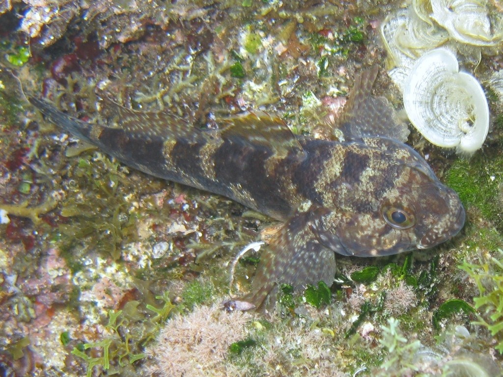

Gobius paganellus και Gobius cobitis (Γοβιός)

Ο «γοβιός» στα ρηχά ελληνικά νερά αντιστοιχεί σε είδη του γένους Gobius, με πιο χαρακτηριστικό τον πετρογοβιό (Gobius paganellus) και, σε μεγαλύτερα μεγέθη, τον μεγαλοκέφαλο γοβιό (Gobius cobitis).
Μορφολογία
Ο πετρογοβιός είναι μικρό ψάρι με μακρουλό σώμα, μεγάλη κεφαλή, σχετικά χοντρά χείλη και δύο ραχιαία πτερύγια, με χρώμα καφέ‑γκρι και σκούρες κηλίδες που τον καμουφλάρουν πάνω σε βράχους και φύκια. Ο μεγαλοκέφαλος γοβιός είναι μεγαλύτερος, επίσης με ογκώδη κεφαλή και μυώδες σώμα, προσαρμοσμένος για ζωή σε ρηχές βραχώδεις λιμνοθαλάσσιες λεκάνες.
Πού τον συναντάμε
Είδη Gobius ζουν σε ρηχές, παράκτιες, βραχώδεις περιοχές, από τη ζώνη παλίρροιας μέχρι περίπου 10–15 m βάθος, συχνά μέσα σε φυκιάδες, βραχότρυπες και λιμνούλες της παλίρροιας. Πολλά είδη αντέχουν και σε υφάλμυρα νερά, σε λιμνοθάλασσες ή εκβολές ποταμών, όπου το νερό είναι συχνά θολό αλλά πλούσιο σε τροφή.
Διατροφή
Οι γοβιοί είναι κυρίως βενθοφάγοι μικροαρπακτικοί: τρέφονται με μικρά καρκινοειδή (αμφίποδα, καβουράκια), πολυχαιτά, μικρά μαλάκια και έντομα, ενώ ο μεγαλοκέφαλος γοβιός καταναλώνει επίσης πράσινα φύκη του γένους Ulva. Η δίαιτά τους είναι ευέλικτη και τους επιτρέπει να εκμεταλλεύονται σχεδόν ό,τι μικροοργανισμό βρίσκουν στον βυθό γύρω από τις κρυψώνες τους.
Συνθήκες εκτροφής
Δεν υπάρχει οργανωμένη ιχθυοκαλλιέργεια για γοβιούς, αλλά η εμπειρία από ενυδρεία δείχνει ότι μπορούν να διατηρηθούν σε μικρές, καλά οξυγονωμένες δεξαμενές με βραχώδεις κρυψώνες, χαμηλό‑μέτριο ρεύμα και θερμοκρασίες περίπου 8–24 °C για είδη όπως ο Gobius paganellus. Χρειάζονται υποστρώματα με πέτρες και φύκια ώστε να κρύβονται και να βρίσκουν φυσική τροφή, ενώ η διατροφή τους σε αιχμαλωσία βασίζεται σε μικρά κατεψυγμένα ή ζωντανά ασπόνδυλα (γαριδάκια, σκουλήκια κ.λπ.).